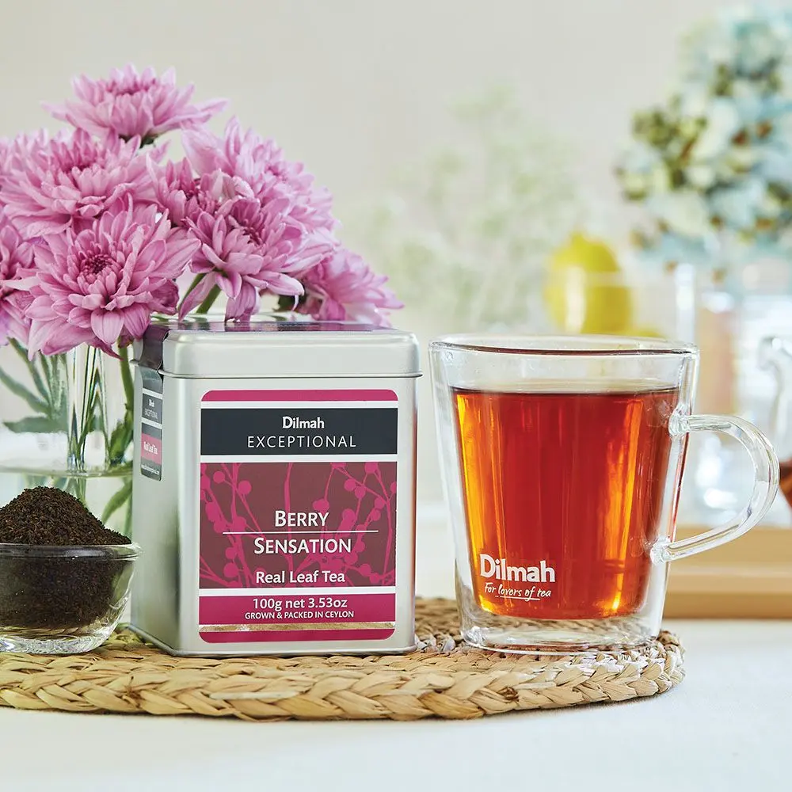
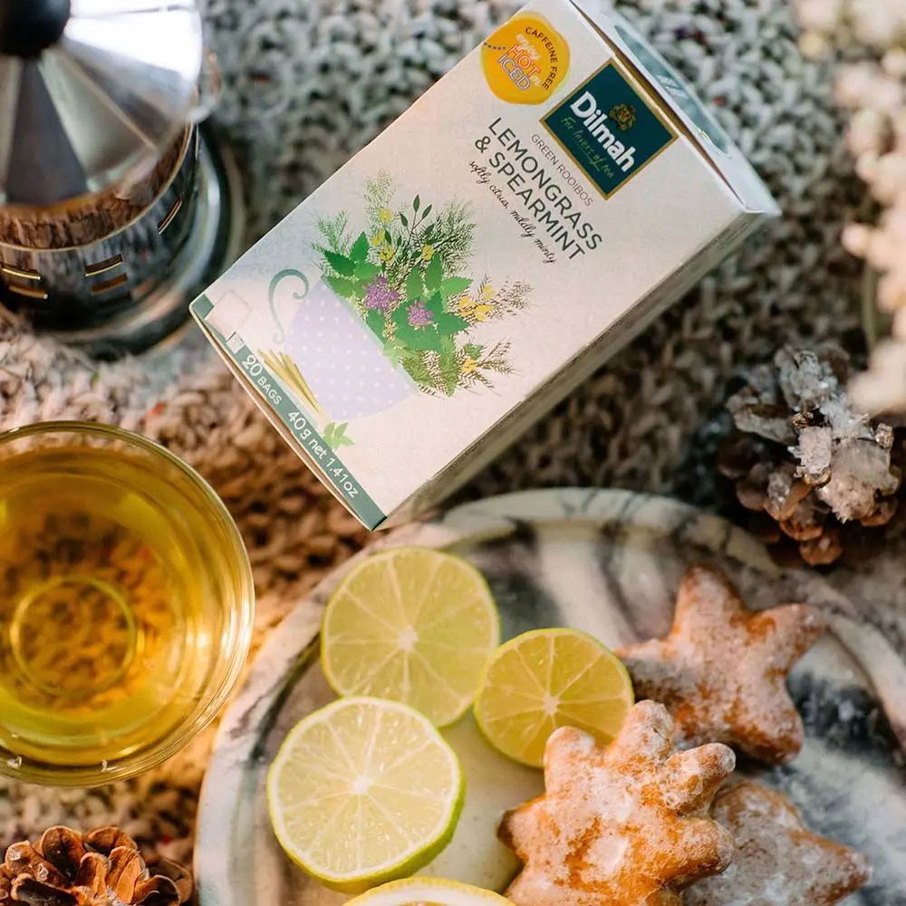

Plantations In Sri Lanka
Bogawanthalawa Tea Plantation
The history of Bogawantalawa is traced back to 1869. It was during this time that pioneering Scottish planters came across a valley surrounded by mountains encircled by lush and forests, quite unlike anything else witnessed… Coffee was initially grown here – however, with the blight that obliterated it, tea planting commenced instead. It was soon discovered that the Extremely fertile soil, elevation ranging from 4,500 to 6,000 with unique microclimatic conditions, provided the perfect terroir to produce the most exquisite teas of distinct character, flavor and body that soon became prized world over. Bogawantalawa has since been termed the Golden Valley of Ceylon Tea…!! Every leaf is carefully handpicked by the nimble fingers of our tea pickers who have learned this intricate art which has been passed down from generation to generation at our tea plantation for over 150 years. We also take pride in the fact that Bogawantalawa Tea Estates is the world’s first tea growing, manufacturing and marketing company offering “Uncompensated Climate Positive Teas” certified for product and facility.
We export more than 50% of tea in value added form. The Value added product range of Sri Lankan tea includes green tea, flavoured tea, organic tea, instant tea, iced tea, and ready-to-drink tea.Tea based soap, bath gel, shampoo and cosmetic products have recently been added to this product range.
Location-Boganwanthalawa Tea Plantation
Pedro Tea Estate Plantation
To see where your morning cup of tea originates, visit the Pedro Tea Estate. Situated about 3.5 KM east of Nuwara Eliya it is accessible by vehicle. Visitors can visit the Tea estate from morning up to 12.30 p.m. and again after 2.00 p.m. At Pedro Estate factory you will be shown the full process of how tea is manufactured and then graded and packed for export to all corners of the world. The Pedro tea estate is located in Central Sri Lanka at close proximity to Nuwara Eliya and is located on a landscape with the blue sky as the background with green pastures of tea and water falls cascading, which is a sight never to be missed.
Tea processing factories are continually improved and upgraded to maintain sufficient technical and hygienic standards through the implementation of ISO 22000, and HACCP. Buyers are thus assured that tea produced in Sri Lanka is not only synonymous with quality, but also conforms to internationally acceptable food safety regulations. Due to its supreme quality, Ceylon Tea manufacturers and Ceylon Tea suppliers from Sri Lanka have carved for themselves a sizable share of the global tea market over the decades.
Location-Pedro Tea Estate Plantation
Damro Tea Estate Plantation
Damro possess over 5,000 hectares of lush tea plantations, spread across all major tea-growing regions in Sri Lanka, from the low lying valleys of Sabaragamuwa to the central hills at elevations exceeding 1,500 meters. Located within these well-nurtured tea gardens, you would also come across 12 factories producing an array of Ceylon’s finest teas, ranging from Rotorvane, Orthodox, CTC and Green tea, largely to cater to the wide demands of local and international markets. “Damro Teas” in particular are lately renowned for promoting an assortment of premium teas, produced using the fresh handpicked harvest from tea fields that carpet the western slopes of Nuwara Eliya and are widely sought after by connoisseurs of this beverage & mostly by those who longed for the tastiest cup of Ceylon tea.
Growers are constantly educated to practice Good Agricultural Practices(GAP). The Processing/ Manufacturing facilities owned by the export companies comply with local standards (SLSI) and with International Quality Standards such as ISO,HACCP, and EU Standards. Traceability throughout the supply chain is monitored in order to guarantee a safe product to the consumers.
Location-Damro Tea Estate Plantation
TYPES OF TEA
| No | Image | Name | Export to | View |
|---|---|---|---|---|
| 1 |  | Real Leaf Green Tea. | China | |
| 2 |  |
Jasmine Green Tea. | USA | |
| 3 |  |
Mint Green Tea. | Uk | |
| 4 |  |
Lemongrass Green Tea. | China | |
| 5 |  | Cinnomon Tea | India | |
| 6 |  |
Ice Tea | USA | |
| 7 |  |
Uk | Organic Tea | |
| 8 | Gee Tea | Nepal | ||
Best Tea In The World |
||||